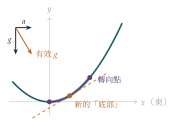

STEP II 2021，第 10 題
繼續之前，請先閱讀題目（原題為英文）。題目載於 OCR 提供下載的 2021 年 STEP 試卷（zip 檔案）內的 STEP II 試卷： www.ocr.org.uk/Images/696588-2021-past-papers.zip
引子
火車駛離車站時，你會感到自己被壓向椅背；桌上那杯咖啡的液面傾斜了；地板上的球滾向車尾。從車廂內看，一切就像重力傾斜了一樣：除了向下，還稍微指向後方。愛因斯坦（Einstein）領悟到這不僅僅是比喻，並把這個領悟稱為「我一生中最快樂的想法」：在局部範圍內，重力與加速度是無法區分的。
這道題把一顆珠子穿在彎曲的金屬線上，再放進一列正在加速的火車裏。從火車上看，珠子的運動就像身處一個傾斜了的重力場（gravitational field）之中，傾斜的角度的正切為 \(a/g\)。金屬線的底部不再是最低點，珠子會圍繞一個新的平衡位置（equilibrium）振動。
動筆之前
火車以加速度 \(a\) 向西（即沿負 \(x\) 方向）加速。對車上的觀察者來說，質量為 \(m\) 的物體看似受到怎樣的「假想」力作用？
在火車的參考系（frame）中，只要加上一個假想力（fictitious force）\(-m \times (\text{參考系的加速度})\)，牛頓第二定律（Newton’s second law）便仍然成立。參考系在 \(x\) 方向的加速度為 \(-a\)，所以假想力是 \(+ma\)，指向東。連同重力一併考慮，珠子每單位質量所感受到的有效重力（effective gravity）為 \((a, -g)\)：向東傾斜。
逐步解題
階段 1 不能靜止於原點
在原點處，金屬線 \(ky = x^2\) 是水平的。該處的法向反作用力（normal reaction）是鉛垂的，因此無法抵消向東的假想力 \(ma\)。沿金屬線方向的合力為 \(ma \neq 0\)，所以珠子不可能相對於火車保持靜止。■
階段 2 能量方程
在火車的參考系中寫出牛頓定律，當中要包括法向反作用力 \(\mathbf{N}\)。然後與速度 \((\dot x, \dot y)\) 取點積。為甚麼 \(\mathbf{N}\) 會消失？
在火車的參考系中， \[m(\ddot x, \ddot y) = \mathbf{N} + (ma, -mg).\] 金屬線是光滑的，所以 \(\mathbf{N}\) 垂直於金屬線，因而也垂直於沿金屬線方向的速度 \((\dot x, \dot y)\)。與速度取點積（dot product），\(\mathbf{N}\) 便會消去： \[m\dot x\ddot x + m\dot y\ddot y = ma\dot x - mg\dot y, \qquad\text{所以}\qquad \dot x(\ddot x - a) + \dot y(\ddot y + g) = 0. \qed\] 左邊是 \(\frac12(\dot x^2 + \dot y^2) - ax + gy\) 的導數，因此這個量是常數。■
這就是火車參考系中的能量守恆（conservation of energy），其中每單位質量的勢能（potential energy）\(-ax + gy\) 已把假想力計算在內。
階段 3 能升到多高？
由於珠子從原點由靜止出發，該常數為 \(0\)。在最高點，珠子瞬時靜止。由此可得出甚麼方程？
靜止時，\(\frac12(\dot x^2 + \dot y^2) = 0\)，所以 \(ax = gy\)。代入 \(y = \frac{x^2}{k}\)，得 \(ax = \frac{gx^2}{k}\)，所以（除了起點 \(x = 0\) 之外）\(x = \frac{ak}{g}\)，而 \[b = \frac{a^2k}{g^2}. \qed\] 珠子沿金屬線向東擺上至點 \(\bigl(\frac{ak}{g}, \frac{a^2k}{g^2}\bigr)\)，然後返回原點，如此往復不息。
階段 4 最快的一點
把速率的平方寫成只含 \(x\) 的函數。它在哪裏最大？
速率的平方是 \(2(ax - gy) = 2\bigl(ax - \frac{gx^2}{k}\bigr)\)，這是 \(x\) 的二次式，在 \(x = \frac{ak}{2g}\) 處取得最大值，剛好在兩個轉向點（turning point）的正中間。該處速率的平方為 \(2\bigl(\frac{a^2k}{2g} - \frac{a^2k}{4g}\bigr) = \frac{a^2k}{2g}\)，所以最大速率是 \[a\sqrt{\frac{k}{2g}}. \qed\]
求金屬線在 \(x = \frac{ak}{2g}\) 處的斜率。它與有效重力 \((a, -g)\) 的方向有甚麼關係？
斜率是 \(\frac{2x}{k} = \frac ag\)。所以在這一點，金屬線垂直於有效重力：它是金屬線在傾斜重力場中的「最低」點，而珠子就圍繞它振動（圖 11.5.1）。

回顧
在方便的參考系中解題，並加上假想力。在火車的參考系中，金屬線是固定的，唯一的代價是多了一個恆力。
與速度取點積。這樣可以消去約束力（constraint force），並得出能量方程。
詮釋答案。轉向點和最快的一點都有幾何意義：有效重力傾斜了。
背後的數學
假想力
牛頓定律在慣性參考系（inertial frame）中成立，即沒有加速的參考系。在加速參考系中，只要加上假想力，牛頓定律便可繼續使用：對於加速度為 \(\mathbf{A}\) 的參考系，要加上 \(-m\mathbf{A}\)；而在旋轉參考系中，則要加上離心力（centrifugal force）和科里奧利力（Coriolis force）。它們之所以稱為假想力，是因為沒有任何物體施加這些力；它們純粹是參考系造成的假象。但對身處其中的人來說，它們卻是千真萬確的。離心力使地球在兩極變得扁平；科里奧利力決定了颶風旋轉的方向（在北半球為逆時針），也令遠程炮彈偏離原來的方向。
等效原理
恆定的假想力 \(-m\mathbf{A}\) 與質量成正比，這一點與重力完全相同。在一個密封的箱子內，沒有任何實驗能夠分辨箱子是靜止在行星上，還是在虛空中加速：這就是等效原理（equivalence principle）。愛因斯坦以它作為廣義相對論（general relativity）的出發點。既然光橫越一個加速中的箱子時看來會彎曲，光在重力場中也必定會彎曲；既然加速火箭的前端和後端的時鐘快慢不同，重力場中不同高度的時鐘也必定如此。這兩個預測都已得到證實，而每一顆 GPS 衛星都必須就第二個效應作出修正：單是這個效應，就令衛星上的時鐘每天比地面的時鐘快約 \(45\) 微秒。
1907 年，愛因斯坦在伯爾尼的專利局工作，當時他正在撰寫一篇關於狹義相對論（special relativity）的綜述文章。據他後來憶述，就在這時，「我一生中最快樂的想法」出現了：一個從屋頂自由墮下的人，不會感覺到自己的重量。只要選取一個下墮中的參考系，重力就可以被「變換掉」。他再花了八年時間，並借助大量新的數學（由高斯（Gauss）和黎曼（Riemann）發展的彎曲空間微分幾何），才把這個想法變成 1915 年的廣義相對論。
思維技巧
在加速度恆定的參考系中，有一個恆定的假想力在起作用。它可以併入勢能之中，而能量在該參考系中守恆。
把運動方程與速度取點積以消去約束力，這個技巧在任何參考系中都適用。到了大學，它會成為一個普遍的原理：若一個系統的方程並不顯含時間，該系統便有一個守恆的能量。
延伸練習
火車上的大炮。試做 STEP I 2000，第 9 題：在加速中的車廂內發射拋體（projectile），其中加速度的作用就如重力傾斜了一樣。
逆風。試做 STEP II 2006，第 11 題：拋體迎着恆定的風飛行，風可以在它落地之前把它吹回你這邊。
火車上的咖啡。證明在加速中的火車上，一杯咖啡的液面是一個與水平面成 \(\arctan(a/g)\) 角的傾斜平面。
微小振動。求珠子圍繞 \(x = \frac{ak}{2g}\) 作微小振動的週期。（提示：在新的底部附近，金屬線近似於一個圓，其半徑等於金屬線在該處的曲率半徑（radius of curvature）。）
延伸閱讀
Daniel Kleppner & Robert Kolenkow, An Introduction to Mechanics（Cambridge University Press），當中講述非慣性參考系與假想力的一章。
Albert Einstein, Relativity: The Special and the General Theory（有多個版本）。愛因斯坦親自撰寫的普及讀物，當中包括加速箱子的討論。
Pedro Ferreira, The Perfect Theory（Little, Brown）。一部廣義相對論的傳記。